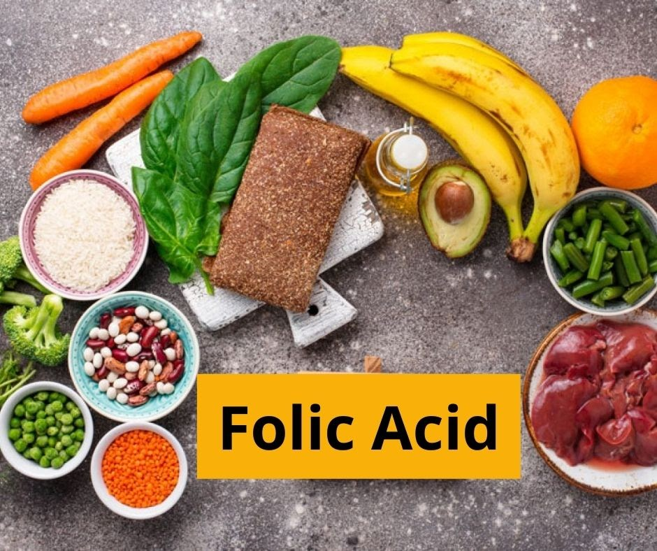

VITAMIN B9 (Folic Acid)
INTRODUCTION
In Lucy Wills in Mumbai drew attention to the importance of nutritional megaloblastic anemia in pregnant women. This anemia was cured by yeast which contained anti-anemic principle the 'Wills factor' which was later termed as folic acid. The term folic acid was coined in 1941 by Mitchell et al. since they found this material in leafy vegetable spinach.
FUNCTIONS OF FOLIC ACID
- Crucial to DNA synthesis and cell division, amino acid metabolism, and the maturation of red blood cells and other cells.
- Essential for healthy embryonic development.
- Good folate in early pregnancy greatly reduces the risk of birth defects called neural tube defects.
- The body converts folate to a coenzyme called tetrahydrofolic acid (THFA), which has five active forms that can accept and donate carbon units during metabolic reactions. Folate functions with vitamins B6 and B12, all three supporting red blood cell synthesis and helping control homocysteine levels.
SOURCES OF FOLIC ACID
- Green leafy vegetables
- Asparagus
- Broccoli
- Orange juice
- Wheat germ
- Liver (avoid if you are pregnant)
- Sunflower seeds
- Legumes

DEFICIENCY OF FOLIC ACID
Megaloblastic Anemia
Megaloblastic anemia is a form of anemia characterized by very large red blood cells due to folic acid deficiency. RBCs are rapidly dividing cells that must be replaced about every 120 days. They are among the first cells to be damaged by this deficiency. The immature RBCs cannot grow and mature normally, resulting in large, unusual shapes.
Neural Tube Disorder
Neural tube disorders, including spina bifida and anencephaly, are severe birth defects of the central nervous system that originate during embryonic development when the neural tube fails to close completely. Human NTDs are multifactorial, with contributions from both genetic and environmental factors.
RECIPES
Broccoli Roll
Ingredients
- Chappathi - 2
- Broccoli - 1
- Sprouted green gram - half cup
- Onion - 2
- Capsicum - 1
- Chilly powder - 1 teaspoon
- Oil - as required
- Salt - as required
Directions
- Take a pan, add oil, and heat it.
- Add onion and capsicum, and sauté well.
- Add salt, sauté, and turn off the flame.
- Steam broccoli in a steam pot.
- Add steamed broccoli to the sautéed mixture.
- Take chappathi, add the vegetables, and roll it.
- Your broccoli roll is ready to eat.